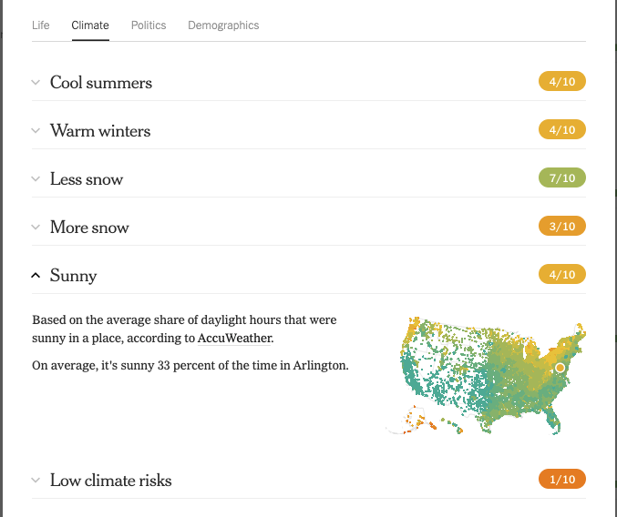

Engineering Interactive Data Visualization Portfolio
Project 1 : Bad Air
Motivation for this application:
This project was created to analyze the air quality data of 3000 counties in the US from 1980 to 2021.
With this data, we can see the change in air quality over time as well as comparing the air quailty of different
counties.
The data used in the visualization comes from EPA and can be found at the following link:
EPA Data.
This data contains two major groups of data. First, is the air quailty index data. This data consist of "Min AQI", "Median AQI", and "Max AQI". It also contains the number of days per year that the air quailty was healthy, unhealthy for sensitive groups, unhealthy, and hazardous. The other major group of data that it contains the number of days per year that a pollutant was the main pollutant. The pollutants that are recorded are CO, NO2, Ozone, SO2, PM2.5, and PM10.
UI Expained:
Visualization 1
In this visualization, we are comparing the max, the median, and the 90th percentile air quailty index of two counties in the US. The interaction that a user can have with the visual is you can change the region selected for both side. When a user selects a new region, every chart on either the left or right side will update with the data from that region. Something that I would like to add in the future is a tooltip pop-up that would read out the exact data at the year the user is hovering over on both line charts. Another addition I would like to add is a year range selector. Instead of having to look at it from 1980 to 2021 i would like the user to be able to select different time ranged from within that to get a more granular view of the data.
Visualization 2
In this visualization, we can see a multi-line chart where the x-axis shows us the year from 1980 to 2021 and the y-axis shows us a number between 0 and 366 that represents the number of days. Each line on the chart represents the number of days a pollutant was the main pollutant in that county per year. The only interaction that this visualization offers is the abilty to change the selected region at the top of the page. In the future, I would like to add a tooltip pop-up to show more detailed information at the selected year on the chart, add buttons to the legend that allow to the user to enable and disable which lines are shown, and the ability to select date ranges. Another thing I would like to add is a vertical line the shows what year is selected and have this line mirrored on both the left and right charts.
Visualization 3
In this visualization, we can see a line chart that lets us see number of days per year that don't have any air quailty measurements in the selected region. An update I would like to make to this visualization, is to convert it to a pie chart to give the user a clearer idea of how well this county is measuring their air quality. As it stands now, I think it doesnt add much value to the data.
Visualization 4
In this visualization, we see a bar chart that shows the number of days in the selected year that the air quailty was good, unhealthy for sensitive group, unhealhy, and hazardous. There are two ways to interact with this visual, the user can either change the selected region using the dropdown at the top of the page or they can change the selected year using the slider under each chart. When using the slider, the bars on the chart will change to represent the data of the selected year.
Visualization 5
In this visualization, we see a choropleth map that shows the median air quality index through a color gradient. There is no interactivity with this visual. Given more time, I would like to move this map to the top of the page and use it to select the regions that are being used for the rest of the visuals. While highlighting the two selected counties on the map. This would give the users a better idea of how the selected regions compare geographically. I would also like to add a slider to the map that will allow the user to update which year the map is representing. As it stands, it is fixed on the 1980s data.
Findings
Finding 1
Using visualization 4, the bar chart, setting both left and right sides to the same county and changing the year to 1980 on the left and to 2021 on the right. I can see that the air quailty in Hamilton county has improved significantly in the last 42 years.
Finding 2
Using visualization 2, the multi-line chart and setting the left chart to Hamilton county, Ohio and the right chart to Posey county, Indiana, you can see that in Hamilton county, there is a good mix of primary pollutants. While in Posey county, after 1997, on the only measured pollutant is Ozone. This discovery leads me to wondering what are the difference between these two counties.
Finding 3
Using Visualization 5, the choropleth map, you can see that in general, the worst air quailty in the US can be found in the south west region of the country.
My Build Process
This build started out as simply figuring out how d3 worked and just getting visualization from the data. Not much time was spent planning out how the code would be built and that did result in some shortcommings. The general structure of my code is each visualization is contained within its own function. Each function contains the data loading and pre-processing, as well as the creation of each visual using d3. From this, I learned that doing it this way is ineffient and that I should do all data loading and processing as a one time event seperate from the visual creation. On top of this, instead of creating a new svg element and appending it to the page, I create base svg elements that are permanently added to the page and simply update each one according the id given to them. I did this so that I could arrange my page in a way that I wanted. From this, I have learned that it is best to have only the parent of each svg defined then generate it using d3. Lastly, the way that I cleared each individal svg is very ineffient and lead to significantly greater debugging time. In hindsight, I should have used a general class and called d3.selectAll('general_class').remove() to clear each visual before updating. The only libraries used in this project were d3 for data visualization and bootstrap css for some basic page layout.
Demo
Project 2 : Herbarium
How to View
The project’s source code is hosted on GitHub at https://github.com/JakeTM9/VID_Project_2 and deployed through GitHub Pages at https://jaketm9.github.io/VID_Project_2/. The project can also be run locally using Python3 with the command python -m http.server 8000 where “8000” is whatever port the user chooses. The application is then accessed by navigating to http://localhost:8000/.
Motivations
The motivation behind this project is to help someone to understand and investigate the various fungi in the University of Cincinnati’s herbarium collection. This is challenging to do just by looking at raw data, or by reading about each fungus one by one due to the large amount of fungi in this collection and the wide span of years and locations they have been collected from. This project allows users to view and compare all of the fungi at once in multiple views and data sets, or to focus on a certain time frame and just view the fungi collected during the selected period.
Data
The data used in this project comes from the University of Cincinnati herbarium website, https://herbariumcinc.com/ . Specifically, only the fungi specimen data was used. The fields focused on were mostly when and where the data was collected, as well as the classification fields. The specimens were collected over a span of 1859-2017, mostly from the United States and Europe but with a few specimens from all corners of the globe. For each specimen, the user can view who collected it, what fungi type it is, and its kingdom, phylum, and habitat.
Visualization Components
Figure 1: Map
Figure 2: Year Color Scale
Figure 3: Days Color Scale
At the top of the page is a map containing colored dots representing where each specimen was collected in the world. Above the map is a dropdown menu allowing the user to change how the dots are colored. There are three options for this: by year, by days into the year, and by phylum. This helps to group and see the quantity of specimens in relation to each other. Below the dropdown menu is the selected dot color type legend. For years and days into the year, this legend is shown as a color scale (Figures 2 and 3). For phylum, a classic color legend is utilized (Figure 1).The map also has three view options; ESRI, topographic, and stamen. ESRI is a standard map showing a satellite image view of the world. The topographic map shows the elevation of various areas. The stamen map shows hill shading and natural vegetation colors. When the mouse is placed over a specimen on the map, a tooltip will appear showing when it was collected, who it was recorded by, the kingdom, phylum, and habitat, and a link to the database entry containing the full information about the specimen (Figure 1).
Figure 4: Timeline
Below the map is a timeline spanning the years the specimens were collected; 1859-2017. The height of the bar in the timeline represents the amount of specimens collected that year (the taller the bar, the more specimens collected that year). When the mouse is moved over a bar, a tooltip appears showing that bar’s year and the amount of specimens collected during that year. For years when no specimens were collected, they were colored gray.
Figure 5: Map Adjusted by Timeline
If a user wants to focus on a specific time frame, they can draw a box over the section of the timeline containing those years, and all of the charts and map on the page will adjust accordingly (Figure 4). The current date range can be seen in the title of the page. In the screenshot below, the years 1930-1956 were selected (Figure 5). After a selection is made, the box can be adjusted to change the time frame.
Figure 6: Total Samples By Month
Figure 7: Total Samples per Type
Figure 8: Total Collections per Collector
Below the timeline are three bar charts shown in Figures 6-8. The first represents the total number of samples collected per month, the second represents the total number of samples collected per fungi type, and the third represents the total number of samples collected by each collector. Each of these charts has a tooltip similar to the timeline, where when the mouse is over a bar it will show what that bar represents and the data value associated with it. Similarly to the map, whenever a time period selection is made on the timeline, the 3 bar charts update to reflect their data over the selected time period.
Figure 9: Pie Charts
Finally, at the bottom of the page are two pie charts representing specimens with/without GPS coordinates, and specimens with/without event dates. Each wedge of the pie chart also has a tooltip which shows what that wedge represents and the number of specimens in that wedge out of the total number of specimens. Like all other visualizations, the pie charts update to reflect their data over the selected time period.
Design Sketched/Justifications
Figure 10: C Goals Final Sketch Draft
Initially, our group came up with the idea together to create the visualization above. We were to have a gradient as our timeline and display the charts and graphs below in a row. While we didn't use the gradient for the timeline (due to lack of readability), we did end up using a gradient for the colored dots timeline with a similar design, though. Because the map was provided to us with a leaflet, the amount of design that went into the map was minimal, though map components will be discussed.
Figure 11: New Timeline Sketch
Figure 12: New Timeline Implementation
After we realized our gradient timeline was not going to work due to lack of precise readability, we decided to implement a sketch we had made (Figure 11) as an alternative to the gradient (proof that sketching multiple ideas for the same goal at once can be useful). The size of the bars change based on the amount of fungi collections in that year. The final result can be seen in Figure 12. Initially we did not have gray boxes indicating years with 0 collections. That idea came to us in a discussion because we felt we were not accurately representing the data. After further considering the non-zero bar color, we decided that the colors were too jarring to look at together. We took into account that the only requirement was that bars be distinguished from one another and implemented the color change seen in Figure 4. This choice, while not technically desaturated green, simulates an alternating desaturated green.
Before we could decide how to color the dots on the map, we had to determine the type of data. Year and days into year are quantitative, while phylum is categorical. We then decided that the year and days into year color scheme should be a diverging gradient, because it needs to highlight a significant amount of differences between points (years/days). The phylum color scheme we went with was simple colors in a categorical scheme. We decided to make data points with no phylum be colored in black for “unknown”. An idea for the future was that to show multiple data points on top of each other we could make the circle bigger and increase the saturation of the color to highlight the distinction.
Figure 13: Brushing Comic
In the above Figure we illustrate our ideal brushing interaction. In this comic the user can click, drag, and let go to update the map’s data points to use the selected time frame (from year x to year y). In order to handle this event we needed to think about how to implement our charts to handle filtering by year. Since most charts are unique in the way they handle their scales and axes, we decided to just make a function in main.js that will call each individual chart/map’s own “updateByYears” function, passing the lower year and higher year from the selection. An issue we ran into was we couldn’t figure out how to get out of “brush mode”. At the time of submission the only way to return to the “pointer” cursor (when hovering over the timeline) is to refresh the page. We almost completely implemented our ideal brushing design.
Finally, we made one more significant design decision. We initially implemented the Samples With/Without GPS Coordinates and Samples With/Without Event Dates charts as bar charts, but then realized both charts were very 1-sided. We considered our options for expressing this kind of data and decided a pie chart was a more appealing way to visualize this kind of data than two one-sided bar charts( Figure 7).
If we had more time the first thing we would do is condense our graphs into a smaller view to have the user avoid scrolling up to adjust the timeline.
Discoveries
The application allows for comparison between the various fungi in the UC Herbarium’s collection that would otherwise be very challenging to do. The data set is very large and diverse, with fungi being collected over a period of 158 years, from all over the world, in 8 different categories of fungi, and from 10 different collectors. Trying to read through each fungi one by one and make comparisons would be nearly impossible. This application displays various interactive comparisons and visualizations to make analyzing all of this data possible and straight forward.
One discovery we made from analyzing the data with our application is that most of the specimens collected were taken from the United States or from Europe. Each specimen is represented by a dot on a map, and while there are dots all over the world, the largest clusters are in these two areas. We have no way of knowing why this is, but it is interesting that the collectors all seemed to concentrate on these parts of the world.
Another discovery that can be made by looking at the timeline is that the bulk of the specimens were collected between 1930-1950. Again we have no way of knowing why this is, but it is possible that this is when the Herbarium had the most funding, or had the most scientists working for them. But it is a vast difference during this time period than any other point in time.
b
Finally, it can be noted that most of the fungi are of the type Basidiomycota by far. 5262 of the specimens are of this type, while there are only 1658 specimens of the second most common type collected, Ascomycota. Most of the fungi types have less than 50 specimens in the collection. Myxomycota, with 400 specimens in the collection, is the only other type with more than 50.
Process
Much like the Dirty Air project, this project visualizing the fungi collection of UC’s Herbarium is written almost entirely in JavaScript using the D3.js library for visualizing the data via the creation of charts and interaction between charts. Additionally for this project the Leaflet.js library was used to implement the map so the user could better visualize where in the world a sample was collected.
The previous project acted as a starting point and reference for many aspects of the project as our team referred back to it and the example provided in class for guidance on implementing our ideas. The first step in this project was to preprocess the data. This ensured JS and D3 would not throw extraneous errors and that the team would know what to expect when working with the data. The graphs created on the page are all separate instances of unique classes which contain the unique process for generating the data necessary for display. All graphs inhabit their own SVG except for the two pie charts which share an SVG due to their similarities.
Figure 14: Git Branch Chart
With this project being quite interactive it was important to be careful and thoughtful when creating each graph so it may be updated in a simple and seamless way. By doing this we were able to have each graph respond to user input such as changing the year range. The graphs will all update to display the newly selected data and redraw their axes in the case of the barcharts so the data is correctly represented and easy to read.
Tooltip implementation proved to be a challenge in some parts of the application and simple in others. They are made using SVGs just as the graphs and are populated with the same types of data as the graphs. On the map for instance the tooltip has been customized to persist when a user hovers their mouse pointer on it so the user can interact with the link provided to the sample’s web page hosted by the herbarium.
Demo
https://youtu.be/XJx7q19w82c
Team Division
Gabe Rapaport:
Visual: Color and formatting for all
Barchart: Fixed formatting
Data: Preprocessed data with python for all visualizations.
Nathaniel Alter:
Timeline: data processing, drawing and formatting the timeline, and tooltips
Barcharts: helped convert two barcharts to pie charts, added tooltips
Map: helped update map data when timeframe was changed
Formatting: helped with overall page formatting, positioning of axis/axis titles/visuals, and added current selected time frame to page title
Steven Hagedorn:
Map: applied date filtering
Barcharts: created four barcharts, helped convert two barcharts to pie charts
Formatting: finalized formatting with team
Source control: (tried) to manage source control
The purpose of this visualization is to help an individual decide on a place to live. The user can select multiple different inputs such as: what do you care about? The climate, political preference, and the demographic that they prefer. Then the visualization will suggest multiple different cities that align with the user selections. Each with a detailed breakdown of that city.
What is the data?
The data is a breakdown of all the different cities around the US where each city has a plethora of different attributes that the visualization takes into consideration. These attributes include things like: What do you care about? This parameter is further broken down into 17 different options. These options can be seen in Figure 1 below.
Figure 1: What do you care about?
This visualization also allows the user to select a desired climate, political standing, and demographics. These options can be seen below in Figure 2.
Figure 2: Climate, Political, and Demograpic options
How was the data collected?
To create the visualization, the authors gathered the data from multiple different sources: The Census Bureau, Realtor.com, AccuWeather, Nich, EarthDefine’s U.S. Tree Map, the Environmental Protection Agency, the Human Rights Campaign, the Guttmacher Institute, the National Venture Capital Association, and Yelp.
The data for each selectable option is collected different and I will breakdown each one below:
Places
The data for places started from a list of 30,000 non-overlapping places defined by the 2015-19 American Community Survey, which was conducted by the US Census Bureau. This data was then processed down to 17,000 places, which contains 77% of the US population.
Affordability
The data for affordability are based on the mean percentile rank of three metrics: median household income, according to the Census Bureau, median house pricing according to Realtor.com over the past two years; and the average price per square. Data was only included for places with 30 or more listings.
Size
The big cities filter excludes places with fewer than 250,000 people.
Race and Ethnicity
The data for race and ethnicity are based on the Census Bureau categories. The racial diversity score is specifically based on a place’s multigroup entropy index.
Age
The data for the age option on the visualization comes from the Census Bureau. This data is broken down into three categories for the visual. Young adults, which measures the number of people from the ages 20 to 34. Parents, which measures the number of households that include someone under the age of 18. Lastly, the retiree score is based on the number of people 65 years and older who are not in the workforce.
Climate
The data for climate is sourced from AccuWeather. The scores for temperature, snowfall, and sunniness are based on the 20-year averages from the National Oceanic and Atmospheric Administration weather stations closest to the population-weighted center of each place. The warm winter score is based on the lowest average monthly low temperature during the months of December, January, and February of each year. The cool summer score is based on the highest average monthly high during the months of June, July, and August of each year. The snowfall scores are calculated based on the total accumulated snowfall during December, January, and February of each year. The sunniness score measures the share of minutes during the day in which the sun was shining by calculating the inverse of the measured cloud cover.
Schools
The school quality score is based on data from Niche. To produce its school score, Niche uses a range of data including: graduation, absenteeism rate, test scores, money spent per student, and survey responses from students and parents. The score for each place refers to the quality of the public schools that serve it, weighted by those schools’ number of students.
Commute
The commute score is derived from the share of workers over the age of 16 whose daily commute was under 30 minutes, according to the Census Bureau.
Space for money
The space for money score is derived from the median price per square foot of housing listings posted on Realtor.com over the last 2 years.
Trees
The tree coverage score is based on the share of the area within a 30-minute drive from a place’s center that is covered by tree canopy, according to EarthDefine’s US Tree Map.
Air Quality
The air quality score is based on the median air quality index in 2020, measured by the EPA.
Amenities
The score for restaurants, music venues and gay bars are based on data from Yelp, which provides business counts by place.
Transgender Rights
The transgender rights score is based on whether a place’s state has enacted policies that support transgender residences, according to the Human Rights Campaign.
Abortion Rights
The abortion rights score is based on the abortion related policies of a place’s state, according to the Guttmacher Institute.
Jobs
The jobs score is based on a place’s unemployment rate and median house-hold income according to the Census Bureau. The score also accounts for state-level venture capital investments, provided by the National Venture Capital Associations.
Who are the users that this visualization was made for?
This visualization was made for individuals that are subscribers of the New York Times to look into places that they might consider living in.
What questions do people want to ask about this data?
The questions a user would want to ask about this data are: What do I care about? What climate do I prefer? What is the political preference of the people I want to live around? What is my preferred demographic? Do I want to live in a big city? What region of the US do I want to live in? How expensive of an area do I want to live in?
How can they find the answers with this tool?
They can find the answer using this tool by making selections for all of the above questions using the provided checkboxes on the visualization. Then, a user can review the cities shown and/or like some of the cities that are shown. The user can then compare all of their liked options.
Some insights gathered using this tool
To show some insights someone can derive with this tool, I will look to find a new place to live for myself. The things I care about are: air quality, restaurants, live music, and jobs. I have no climate or political preference. Lastly, I want to live near young people.
Options
Figure 3: Options
The above figure depicts the options choosen for this search.
Search Results
Figure 4: Results
The above figure depicts the highest scoring results from the search. This image only shows the first five results given.
Overview
Figure 5: City Overview
The above figure its the first view the user will see when selecting a city. This view contains an overview of all the scores the user selected to see as well as a brief summary of that city.
Lifestyle
Figure 6A: Lifestyle
The figure above shows the user the breakdown of all the scores related to the lifestyle of that city.
Note: Each attribute contains a chloropleth map for that particular dataset with the selected city highlighted on that map.
Figure 6B: Chloropleth Map for Public School Quality
Climate

Figure 7: Climate
The figure above shows the user the breakdown of all the scores related to the climate of that city.
Politics
Figure 8: Politics
The figure above shows the user the breakdown of all the scores related to the political views of that city.
Demograpics
Figure 9: Demograpics
The figure above shows the user the breakdown of all the scores related to the demographics of that city.
Comparison
Figure 10: Comparison
The figure above shows the user a comparison of all the cities liked by that user. This view allows the user to quickly compare different cities with the fix attributes being the ones selected by the user for the search. This comparison utilizes colors to enable the user to quickly distinguish between the different qualities.
Search
Figure 11: Search
The figure above depicts the use of the cities search function on the visualization.
State Outline
Figure 12: State Outline
The figure above shows the user where the selected city is within its own state.
What design choices are effective?
The design choices I found highly effective are: the choice inputs checkboxes (Figure 3), the search bar (Figure 11), the breakdown of each city’s information (Figure 6 through Figure 8), the use of color for the scores to allow the user to quickly see the difference in high scores and low scores (Figure 10). The states outline with the selected cities location highlighted in the overview (Figure 12). I also thought the US choropleth map for each score attribute with the selected city highlighted on each map was useful in showing the user how that area stands compared to the rest of the country for that score. Lastly, I found the comparison visual highly effective with its use of colors (Figure 6B).
What are the limitations of this design- what can't someone do with this visualization?
A limitation of this design is a user cannot look around a specific area without knowing what that area is called. It would be useful to have an interactive map that the user can click on to select a region, then state, then city.
Are there any design choices that are not effective, and how could they be improved?
One of the design choices that I see can be improved on is the color of the selected city’s state outline. This outline is a very light gray on a white background making it hard to see clearly and quickly. This can be seen in Figure 12.